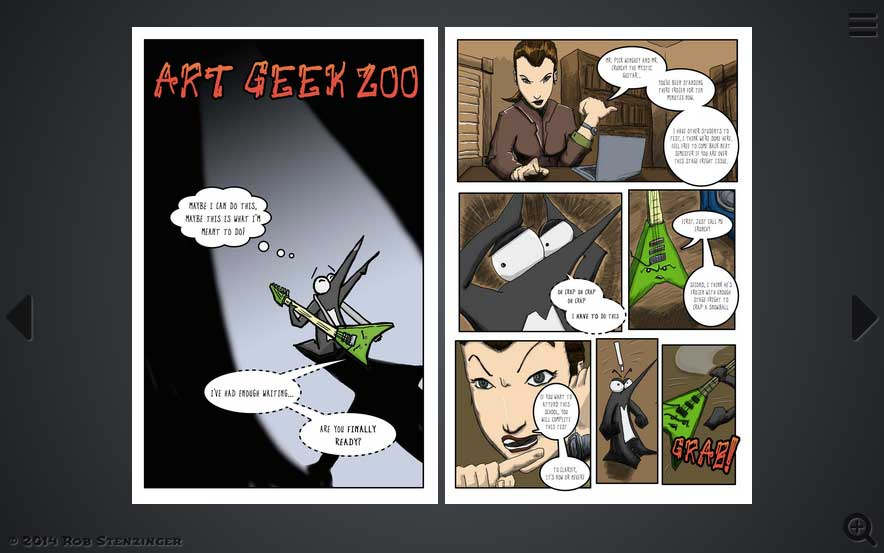

ComicasterJS
ComicasterJS is a web-based comic reader and boilerplate for publishing comics or other sequential art galleries. It's a way to publish a set of comics with a reading experience that feels more like an e-reader and less like a blog.
Download .zip
Download .tar.gz
View on GitHub
ComicasterJS Example
